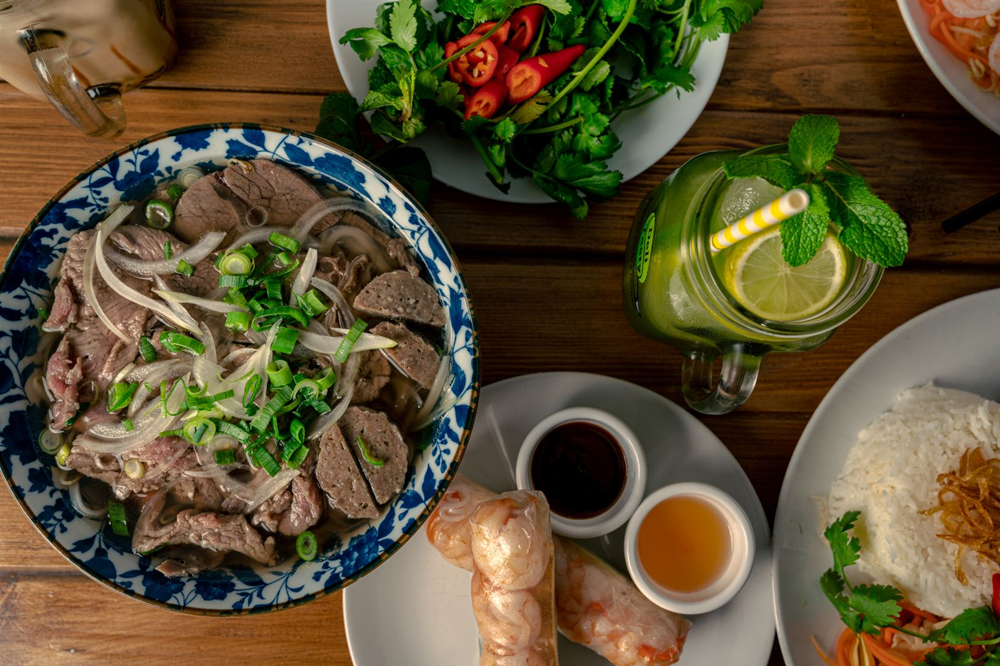
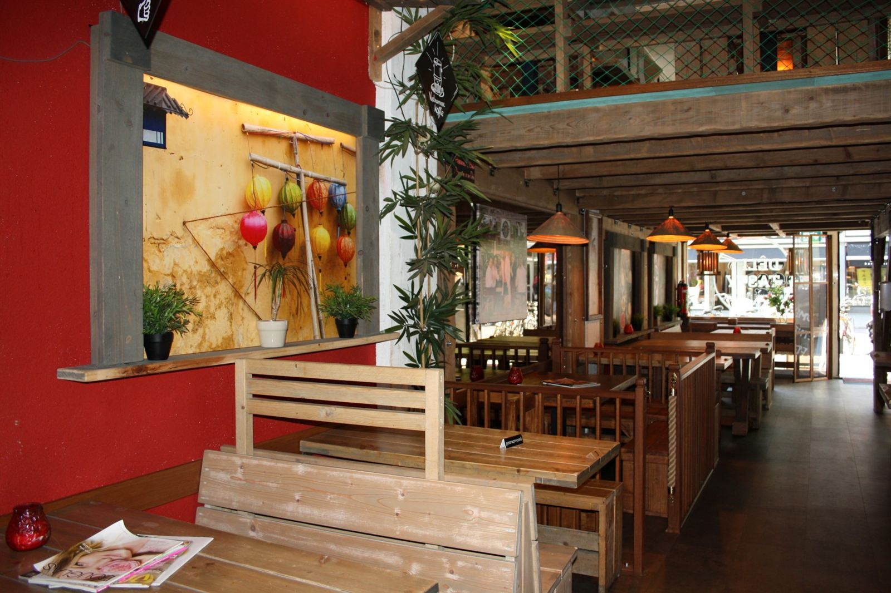
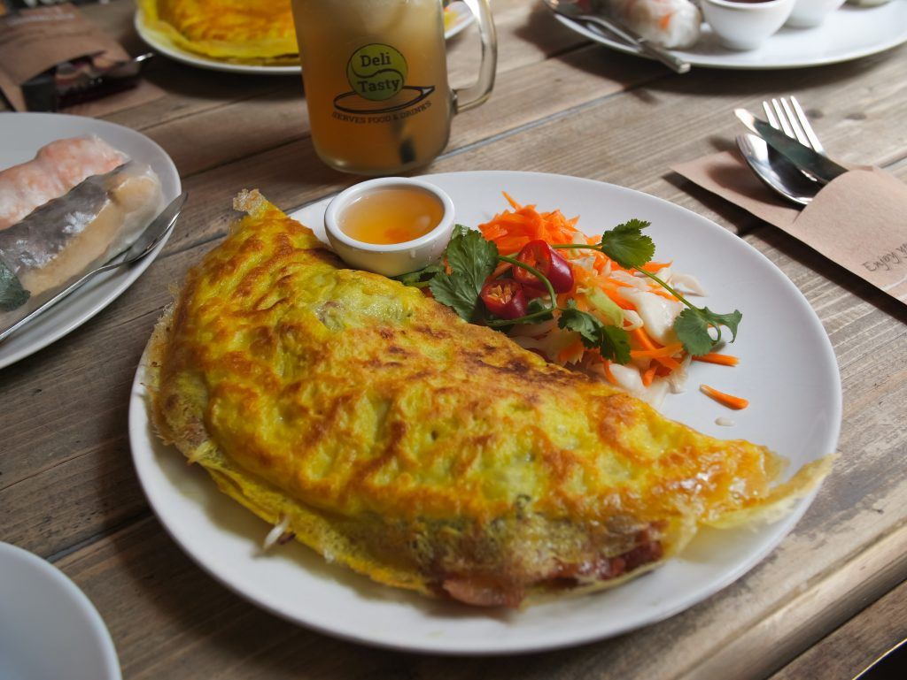
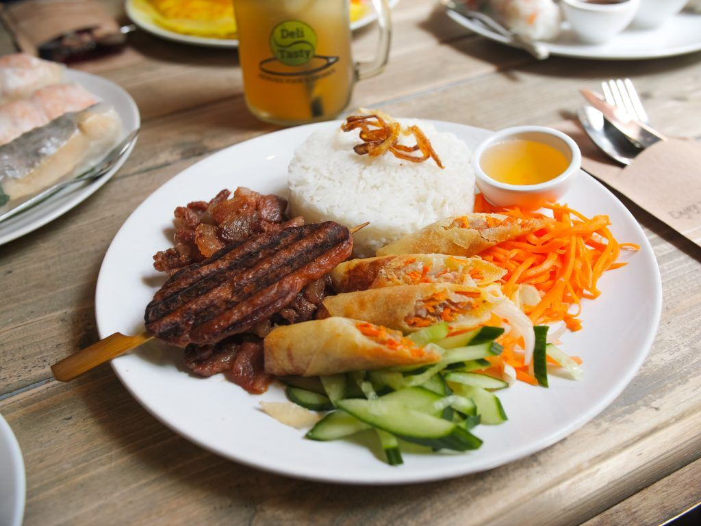
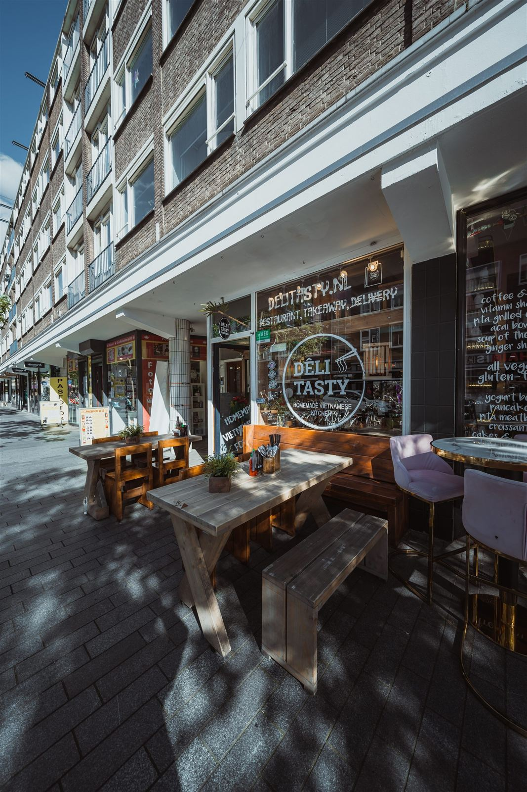
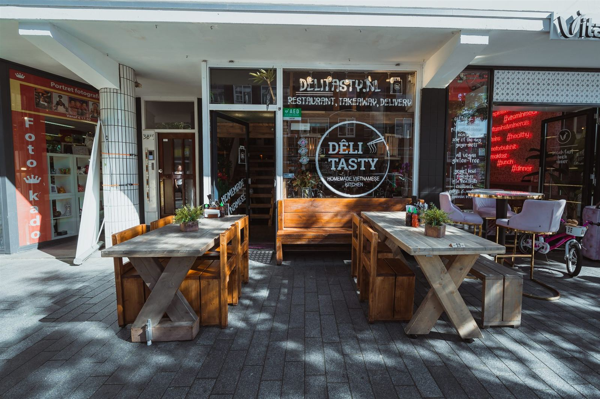
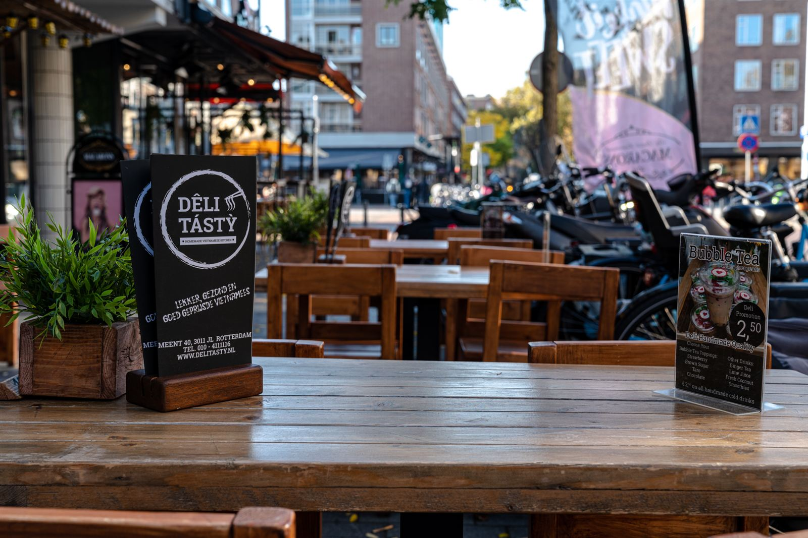
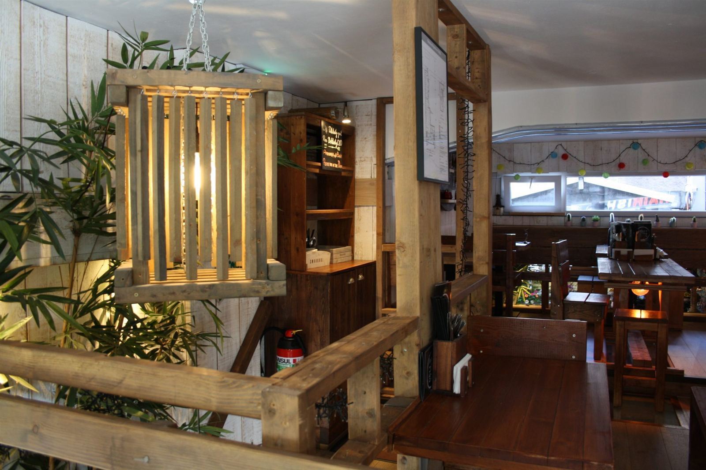

Telefonisch
We nemen reserveringen aan voor lunch en diner. Bel ons dagelijks vanaf 12.00.
010-4111116
Pho van bouillon die minimaal 24 uur trekt, gerechten met dagverse producten en een vriendelijke prijs. Dagelijks vanaf 12.00 aan de Meent.
Dagelijks open van 12:00 tot 22:00
Deli Tasty is een Vietnamees restaurant in Rotterdam. Wij serveren het beste van de traditionele Vietnamese keuken voor een vriendelijke prijs. Bij ons geniet u van een authentiek Vietnamese ambiance en een persoonlijke service.
We zijn dagelijks geopend vanaf 12.00 en verwelkomen u graag in het bruisende hart van Rotterdam, voor een snelle brunch, een lunch of een heerlijk diner.



Je favoriete gerechten afhalen of laten bezorgen? Deli Tasty zorgt ervoor dat je heerlijk eet, thuis of op het werk.
We nemen reserveringen aan voor lunch en diner. Bel ons dagelijks vanaf 12.00.
010-4111116Om voor iedereen genoeg plaats en ruimte te houden, keuren we online groepsreserveringen vanaf 7 personen met de hand goed. Uw bevestiging per mail kan daardoor iets langer duren.
Wat uw evenement of feest ook is, wij maken uw dag graag bijzonder, met arrangementen op maat en persoonlijke bediening aan tafel. Voor gezelschappen van 16 tot 20 gasten is onze bovenste verdieping privé te huur.
info@delitasty.nlThang en Loan Tran (chef-kok) leerden elkaar kennen in Ho Chi Minh City, het bruisende hart van Vietnam. Thang werkte ruim 15 jaar als goudsmid en maakte sieraden in zijn eigen atelier. Samen wilden ze hun kinderen de allerbeste toekomst geven.
In 2014 sprongen ze in het diepe: ze ruilden het vakmanschap in voor een restaurant. Zo kregen ze de vrijheid om hun dochters te steunen in hun droom: het maximale uit hun topsport halen.
Daarom heeft de naam een persoonlijke betekenis. Deli staat voor de eerste twee letters van de namen van beide dochters, Tasty voor delicatesse, délicieux en delicious: heerlijk eten staat centraal.




Wil jij deel uitmaken van een gezellig, veelzijdig en gemotiveerd team? Bellen of even binnenstappen kan altijd: vraag naar dhr. T. Tran.
We zoeken per direct twee vlotte bezorgers die in de omgeving van Rotterdam wonen. Bij voorkeur heb je een eigen scooter (rijbewijs niet vereist) en ben je tussen 17 en 21 jaar. Je bezorgt 3 tot 4 uur per keer, tussen 17:30 en 20:30, vanaf ons restaurant tot maximaal 4 km. Je bent minimaal 3 keer per week beschikbaar.
We zoeken een enthousiaste, flexibele collega die graag in de keuken werkt, vooral in de avonduren door de week en in het weekend. Je zet ingrediënten klaar en snijdt ze, doet tussentijdse kwaliteitscontroles (gaarheid, kleur, smaak) en bereidt eenvoudige gerechten zoals sauzen en soepen. Je helpt bij het bereiden van gerechten volgens recepturen of aanwijzingen van de chef-kok en maakt de borden op.
| Restaurant | 12:00 – 22:00 |
|---|---|
| Keuken | tot 21:30 |
| Bezorgen en afhalen | 12:00 – 21:30 |
Gratis wifi. U betaalt met pin, Mastercard, Visa of contant.
Meent 40
3011 JL Rotterdam
010-4111116
info@delitasty.nl
Op 5 minuten lopen van trein- en metrostation Rotterdam Blaak. Met de auto parkeert u betaald op de parkeerplaats om de hoek of langs de straat, direct bij het restaurant.